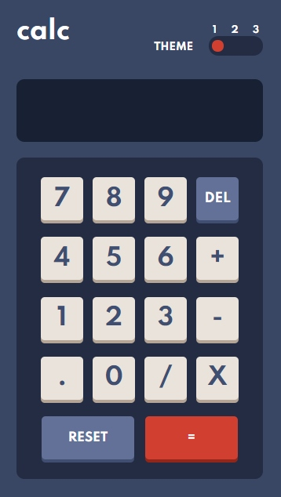
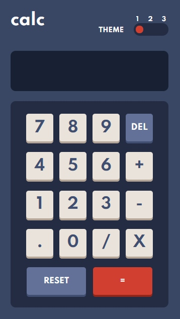

Sobre mi
Me llamo Jorge Emmanuel Delgado, este es mi portfolio en el cual muestro las tecnologias con las que trabajo, los proyectos que hago y por que no, un poco sobre mi. El mundo del desarrollo web esta en constante crecimiento, a pesar de que hay deficit de desarrolladores la competencia es grande, me apasione por este mundo hace ya mucho tiempo, desde que entre en la secundaria me gustaba, pero no sabia por donde empezar, al principio tratando con lenguajes de programación como python sin ningun exito, no era lo que queria, paso el tiempo y al terminar la escuela secundaria decidi anotarme a un curso de SQL, pero seguia sin ser lo que queria o lo que mas me apasionara, tiempo despues encontre lo que mas me apasionaria, el desarrollo web desde el lado del usuario, mediante cursos que encontraba por youtube poco a poco fui aprendiendo y enamorandome mas de este mundo, primero empece por lo mas basico, HTML luego de aprender lo necesario sobre HTML hacia falta darle estilos, por lo que aprendi CSS y para agregar funcionalidades y que la pagina sea mas dinamica, Javascript, aun sigo en constante aprendizaje pero se que dia a dia aprendo cosas nuevas y mejorando mi habilidad y rapidez para terminar proyectos.
Dejando de lado el desarrollo web, hay otras cosas que me gustan y apasionan, por ejemplo los deportes, el voleyball, futbol, entrenamientos en gimnasio y cualquier actividad fisica. Lo que me gusta hacer en mis tiempos libres es jugar algun video-juego, puede ser de futbol como el fifa, o de carreras como el forza horizon. Hace poco empece a tener un hobbie que me empezo a gustar y a enamorar mas, los perfumes, me gusta coleccionar perfumes, por ahora solo tengo 3, pero poco a poco voy conociendo nuevos aromas y ya teniendo en mente cual sera mi proxima compra. Me gustan la musica, los instrumentos, toco la guitarra, no soy bueno pero de vez en cuando me gusta tocar. Me gusta viajar, pasear por lugares nuevos, disfrutar de una caminata por las mañanas y disfrutar de estar solo, los lugares a los que me gustaria visitar son Estados Unidos, Japon y Nueva Zelanda.
Sobre mi mismo puedo decir que soy una persona muy tranquila, me gusta la tranquilidad, soy muy flexible y compresivo, me gusta empatizar con los demas y una regla que sigo en mi vida es "haz a los demas lo que a ti te gustaria que te hagan", haciendo esto me siento feliz por el hecho de que es algo que a mi me gustaria que me hagan, la manera de tratar a los demas, por eso soy muy comprensivo, soy una persona muy emocional y sentimental, soy responsable cuando se me encomienda una tarea, siempre tratando de hacerlo lo antes y mejor posible y me gusta ser ordenado, soy muy amable con los demas y empatico. Me gustaria seguir mejorando en varios aspectos de mi vida, por ejemplo algo que me cuesta mucho por el hecho de ser emocional es motivarme rapido por algo y despues perder la motivacion, es algo que a muchos les pasa pero algunos mas que otros, en mi caso me hace falta mas disciplina y es algo en lo que estoy trabajando mucho. otra cosa en la que me gustaria mejorar es en la paciencia, no es que no sea paciente con cosas en las que se cuanto tiempo pueden llevar, por ejemplo un viaje de avión, la fecha para un evento importante, o el estreno de una serie que me gusta, pero si lo que me genera ansiedad son las cosas que no puedo controlar, por ese lado me falta paciencia, y me genera ansiedad que me lleva a no tomar las mejores decisiones, y es algo en lo que sigo trabajando y tratando de mejorar.
Aun podria hablar mucho mas sobre mi, pero esto creo que es lo esencial. Tengo un largo recorrido en este mundo del desarrollo web y estoy ansioso por alcanzar mis metas. A corto plazo conseguir trabajo, preferentemente me gusta el freelance por el tiempo que se maneja y que se puede trabajar desde cualquier lado con una notebook e internet. A Mediano plazo seguir aprendiendo mas sobre desarrollo web, tambien desarrollo de aplicaciones moviles y backend para poder brindar un servicio mas completo.
Proximo a aprender


.jpg) 
